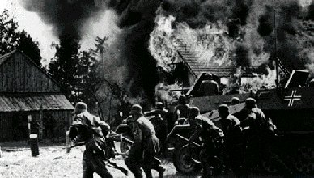
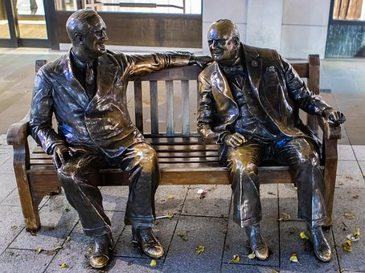

La Seconde Guerre mondiale commence officiellement en 1939 mais les faits historiques suivants vont la provoquer.
Proyecto de Bilingüismo
La deuxième Guerre Mondiale
1933-1938

En 1933, Hitler est proclamé Führer en Allemagne. Il va promettre une Allemagne plus grande et mieux armée. Il développe l’achat de nombreuses armes et forme une armée gigantesque. Il est allié avec Mussolini et Franco. Cependant le Général Franco ne participera pas à la Seconde Guerre mondiale car l’Espagne est très affaiblie après la Guerre Civile.
En 1938, Adolphe Hitler s’empare de l’Autriche. Puis, il obtient une partie de la Tchécoslovaquie. L’Europe ne réagit pas car aucun pays ne veut la guerre..
1939-1941
 Mais en 1939, lorsque l’Allemagne s’allie avec la Russie et envahit la Pologne, la France et l’Angleterre déclarent la guerre le 3 septembre.
L’Allemagne, l’Italie et le Japon forment les forces de l’Axe et, la France, l’Angleterre et les États-Unis sont les Alliés. Cependant le 27 septembre 1939, la Pologne tombe et elle est partagée entre l’Allemagne et la Russie.
Le 10 mai 1940, Hitler ataque la France en entrant par la Belgique et la Hollande. Il arrive à Paris le 14 juin 1940. L’armée française ne peut contenir l’attaque et les forces allemandes arrivent jusqu’à Lyon. La population civile fuit vers le sud, c’est l’éxode. C’est une grande défaite pour la France qui ne peut lutter, la République tombe et le Maréchal Pétain réclame l’armistice puis le signe le 22 juin 1940.
L’armée française ne peut contenir l’attaque et les forces allemandes arrivent jusqu’à Lyon. La population civile fuit vers le sud, c’est l’éxode. C’est une grande défaite pour la France qui ne peut lutter, la République tombe et le Maréchal Pétain réclame l’armistice puis le signe le 22 juin 1940.
En avril 1941, Hitler envahit la Yougoslavie puis la Grèce. Les armées allemandes essaient ensuite d’envahir l’URSS mais le froid les empêche de progresser et ils doivent abandonner.
 En août 1941, le premier ministre Churchill et le président Roosevelt des États-Unis se rencontrent pour établir et signer une charte de l’Atlantique. .
Le 7 décembre 1941, le Japon qui est allié avec l’Allemagne va attaquer Pearl Harbour, une base militaire américaine. Les États-Unis entrent alors en guerre en s’alliant avec les Anglais et les Russes. La guerre devient mondiale.
Activités
Copie ces questions dans ton cahier et fais les activités.
1) Rédige une biographie courte du dictateur Adolphe Hitler.
2) Qu’est-ce que la charte de l’Atlantique? Cherche des informations.
3) Qu’est-ce qu’un armistice?
Obra publicada con Licencia Creative Commons Reconocimiento Compartir igual 4.0